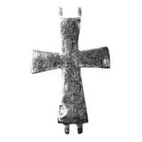

Catalog › CE-0255 · KOR2003-I.2.14
Valvă de revers de encolpion gravat, Maica Domnului Orantă cu cruce în cerc deasupra capului
sec. X–XI (901–1100) · Pekari (Kniaja Gora), regiunea Cerkasî (raionul Kaniv), Ucraina · Muzeul Național de Istorie al Ucrainei, Kiev, inv. В-25/2031 (804, 69301)
single valve of a reliquary cross, aramă; c. X–XI (901–1100); found at Pekari (Kniaja Gora), regiunea Cerkasî (raionul Kaniv), Ucraina; kept at Muzeul Național de Istorie al Ucrainei, Kiev.


Identificare
- Categorie
- Valvă izolată
- Material
- Aramă
- Tehnică
- Turnare în relief; Gravare (incizie)
- Dimensiuni
- Î 55 × L 41 × Gr 6 mm
Iconografie
- Revers
- Maica Domnului Orantă; Ornament geometric
- Descriere revers
- Valvă de revers de encolpion gravat, cu capete drepte, abia lărgite. Capătul de jos al crucii este mai lung decât cel de sus. Suprafața interioară a valvei este netedă. Imaginea de pe valvă este puternic lustruită. Pe exterior, în centrul crucii, imaginea Maicii Domnului (tipul Orantă) în întreaga statură, deasupra capului ei o cruce cu patru brațe în cerc. Pe capetele laterale ale valvei ornament vegetal-geometric și inscripții în coloană. Toate imaginile sunt gravate. Inscripții gravate: pe capătul stâng – ΘЕО, la dreapta s-a păstrat un singur semn – I.
- Inscripții
- ΘЕО; I
- Limba
- Greacă
Datare și atribuire
- Datare
- sec. X–XI (901–1100)
- Centru
- Necunoscut
- Tipologie
- Korzukhina–Peskova 2003, tip I 2
Descoperire
- Localitate
- Pekari (Kniaja Gora)
- Regiune
- regiunea Cerkasî (raionul Kaniv)
- Țară
- Ucraina
- Context
- Fortificație
Păstrare și referințe
- Colecție
- Muzeul Național de Istorie al Ucrainei, Kiev
- Nr. inventar
- В-25/2031 (804, 69301)
- Bibliografie
- G. F. Korzukhina, A. A. Peskova, Древнерусские энколпионы. Нагрудные кресты-реликварии XI–XIII вв., Sankt-Petersburg, 2003 [Korzukhina–Peskova 2003], p. 55, cat. nr. I 2/14, reprodusă la Табл. 11 (planșe, p. 253). Bibliografie citată în sursă: Леопардов 1891а, табл. II, № 15; Корзухина, архив ф. 77, д. 14, л. 2.
- Figura
- Табл. 11
- Planșe
- Korzukhina–Peskova 2003, Табл. 11 (planșă fără paginație proprie în PDF; p. 253 tipărită)
- Observații
- Datare după Peskova: sec. X–XI. Circumstanțe: Săpături N. F. Beleașevski, anii 1890; descoperit pe așezarea fortificată. Proveniență în colecție: din colecția B. I. și V. N. Khanenko. Coordonate: nu sunt date în sursă.
Citare: Corpus Encolpiorum, CE-0255, Valvă de revers de encolpion gravat, Maica Domnului Orantă cu cruce în cerc deasupra capului, https://vitaliejosanu1979-ux.github.io/primul-meu-proiect/piese/KOR2003-I.2.14/ (accesat 2026-10-17).